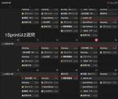
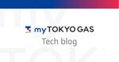
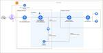

東京ガス内製開発チーム Tech Blog
https://tech-blog.tokyo-gas.co.jp/
東京ガス内製開発チームのTech Blogです！
フィード

myTOKYOGASフロントチームによるDevSecOpsの旅路への第一歩 1
1
東京ガス内製開発チーム Tech Blog
はじめまして！東京ガスでmyTOKYOGASフロントエンドチームを担当している中嶋です！ 本稿では、当チームのプロダクト開発において、パッケージ更新とリリース作業を取り上げて、内製開発の様子をご紹介させて頂ければと思います。 パッケージ更新について Dependabotによる自動更新 コンテナのセキュリティ脆弱性診断について リリース作業について テスト用の検証環境 ブランチ運用について デプロイ作業について おわりに プロダクトの技術スタックについては、こちらをご覧ください。 note.com パッケージ更新について パッケージ更新は地味な作業かもしれないですが、更新せずに長期間に渡って放置…
2日前

フリーランスから東京ガスに入社して内製開発に挑戦する話
東京ガス内製開発チーム Tech Blog
みなさん、こんにちは！myTOKYOGAS フロントエンドチームに所属しております相川と申します。 2024年1月に東京ガスの仲間入りをし、早3ヶ月が経ちました。 このエントリでは、フリーランスから東京ガスに入社するに至った経緯について、拙い文章で恐縮ですが書いていこうと思いますので最後までお読みいただけたら幸いです。 これまでの経歴 東京ガスとの出会い なぜ東京ガスに入社したのか 入社後の気づき オープンなコミュニケーション文化 フレキシブルな働き方 貸与されるPCのスペックが高い 今、何しているのか さいごに これまでの経歴 入社以前はフリーランスエンジニアとして活動しておりました。 20…
5日前

Amazon EKS の Ingress を考える ~ AWS Load Balancer Controller + Istio ~ 7
東京ガス内製開発チーム Tech Blog
みなさんこんにちは、杉山です。花粉症に必死に抗う毎日ですが、気づいたら3月も残りわずかですね。同士のみなさん、がんばって乗り越えましょう！ さて今回は、私の前回記事：Amazon EKS 導入に続いて、少しだけ深堀りして Ingress の部分について書いてみたいと思います。 Amazon EKS の Ingress を考える ALBC + Istio 全体構成 構築してみる - ALBの作成 - Istio コアコンポーネントのインストール Gateway リソースの作成 Virtual Service の作成 実際にやってみて さいごに Amazon EKS の Ingress を考える …
6日前

Amazon EKS で始めるマイクロサービスプラットフォーム
東京ガス内製開発チーム Tech Blog
みなさんこんにちは！ エンジニアリングチームリーダー兼SREの杉山です。 今回は「マイクロサービスプラットフォームとしての Amazon EKS 導入」について投稿します！ 第一弾は導入にいたった経緯などをご紹介、以降は細かいところもご紹介できたらな・・・と思っています。 Amazon EKS とは？ 導入のモチベーション どんな感じで使っているのか？ 監視ツール Karpenter Bottlerocket Kubernetes は大変？ さいごに ともに働く仲間を募集しています！ Amazon EKS とは？ みなさん大好きな AWS が提供するマネージド Kubernetes サービスで…
1ヶ月前
myTOKYOGAS内製化ジャーニー ~ エンジニアゼロからの挑戦 ~
東京ガス内製開発チーム Tech Blog
こんにちは、東京ガスのCX推進部デジタルマーケティンググループでテックリードをしております中島です。 東京ガスでは「myTOKYOGAS」のリニューアルプロジェクトにおいて、事業組織内に内製開発チームを立ち上げ、2023年11月にサービスインまでやり遂げました。今では自動テストやCI/CDの稼働はもちろんのこと、内製開発チームにて２週間1スプリントでのアジャイル開発と保守運用までを責任を持って行うことができるようになりました。 今回は我々が初めて内製化に挑んだプロジェクトであるmyTOKYOGASのリプレイスと並行して立ち上げを進めた内製開発チームについてお話ししたいと思います。 内製開発チー…
2ヶ月前
はじめまして！東京ガス内製開発チームです！
東京ガス内製開発チーム Tech Blog
みなさん、はじめまして！ 東京ガスCX推進部デジタルマーケティンググループでエンジニアチームのリーダーをしております杉山です。 このたび、当チーム（以下、内製開発チームと呼びます）での技術的な取り組みについて紹介するため、 Tech Blog を開設しました！ 実は私たち内製開発チームは note の方でも投稿しているのですが、このブログではソフトウェアエンジニアの内容に特化したものを投稿していく予定です💪 東京ガス内製開発チームって？ 私たちのチームは myTOKYOGAS を中心としたお客さま接点のあるプロダクトを扱っております。23年11月、 myTOKYOGAS のリニューアルにあたっ…
2ヶ月前